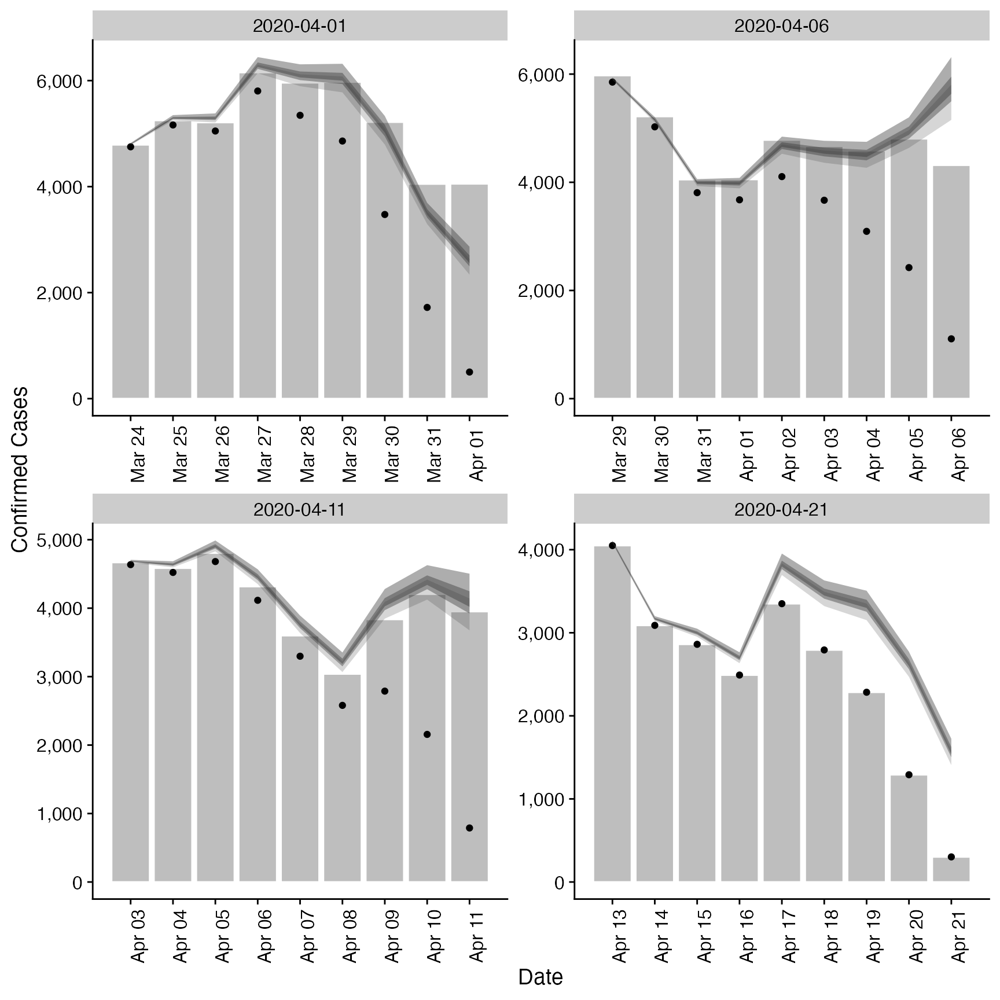

Estimate Truncation of Observed Data
estimate_truncation.Rd Estimates a truncation distribution from multiple snapshots of the same
data source over time. This distribution can then be used in
Estimates a truncation distribution from multiple snapshots of the same
data source over time. This distribution can then be used in regional_epinow,
epinow, and estimate_infections to adjust for truncated data.
The model of truncation is as follows:
The truncation distribution is assumed to be log normal with a mean and standard deviation that is informed by the data.
The data set with the latest observations is adjusted for truncation using the truncation distribution.
Earlier data sets are recreated by applying the truncation distribution to the adjusted latest observations in the time period of the earlier data set. These data sets are then compared to the earlier observations assuming a negative binomial observation model.
This model is then fit using stan with standard normal, or half normal,
prior for the mean, standard deviation and 1 over the square root of the over dispersion.
This approach assumes that:
Current truncation is related to past truncation.
Truncation is a multiplicative scaling of underlying reported cases.
Truncation is log normally distributed.
estimate_truncation( obs, max_truncation = 10, model = NULL, CrIs = c(0.2, 0.5, 0.9), verbose = TRUE, ... )
Arguments
| obs | A list of data frames each containing a date variable and a confirm (integer) variable. Each data set should be a snapshot of the reported data over time. All data sets must contain a complete vector of dates. |
|---|---|
| max_truncation | Integer, defaults to 10. Maximum number of days to include in the truncation distribution. |
| model | A compiled stan model to override the default model. May be useful for package developers or those developing extensions. |
| CrIs | Numeric vector of credible intervals to calculate. |
| verbose | Logical, should model fitting progress be returned. |
| ... | Additional parameters to pass to |
Value
A list containing: the summary parameters of the truncation distribution
(dist), the estimated CMF of the truncation distribution (cmf, can be used to adjusted
new data), a data frame containing the observed truncated data, latest observed data
and the adjusted for truncation observations (obs), a data frame containing the last
observed data (last_obs, useful for plotting and validation), the data used for fitting
(data) and the fit object (fit).
Examples
#set number of cores to use options(mc.cores = ifelse(interactive(), 4, 1)) # get example case counts reported_cases <- example_confirmed[1:60] # define example truncation distribution (note not integer adjusted) trunc_dist <- list(mean = convert_to_logmean(3, 2), mean_sd = 0.1, sd = convert_to_logsd(3, 2), sd_sd = 0.1, max = 10) # apply truncation to example data construct_truncation <- function(index, cases, dist) { set.seed(index) cmf <- cumsum( dlnorm(1:(dist$max + 1), rnorm(1, dist$mean, dist$mean_sd), rnorm(1, dist$sd, dist$sd_sd))) cmf <- cmf / cmf[dist$max + 1] cmf <- rev(cmf)[-1] trunc_cases <- data.table::copy(cases)[1:(.N - index)] trunc_cases[(.N - length(cmf) + 1):.N, confirm := as.integer(confirm * cmf)] return(trunc_cases) } example_data <- purrr::map(c(20, 15, 10, 0), construct_truncation, cases = reported_cases, dist = trunc_dist) # fit model to example data est <- estimate_truncation(example_data, verbose = interactive()) # summary of the distribution est$dist#> $mean #> [1] 0.744 #> #> $mean_sd #> [1] 0.05 #> #> $sd #> [1] 0.839 #> #> $sd_sd #> [1] 0.059 #> #> $max #> [1] 10 #>#> index mean se_mean sd lower_20 lower_50 lower_90 #> 1: 10 1.0000000 8.712857e-17 1.234950e-16 1.0000000 1.0000000 1.0000000 #> 2: 9 0.9896384 7.121077e-05 2.644706e-03 0.9850533 0.9880567 0.9891663 #> 3: 8 0.9751324 1.555000e-04 5.804736e-03 0.9652018 0.9715982 0.9740545 #> 4: 7 0.9543502 2.536085e-04 9.522282e-03 0.9381611 0.9484424 0.9524527 #> 5: 6 0.9237824 3.636627e-04 1.374727e-02 0.9007134 0.9151095 0.9209420 #> 6: 5 0.8774567 4.770942e-04 1.818619e-02 0.8473432 0.8659506 0.8733093 #> 7: 4 0.8048805 5.694237e-04 2.196358e-02 0.7692978 0.7906389 0.7993725 #> 8: 3 0.6872952 5.815987e-04 2.297606e-02 0.6513323 0.6722485 0.6812369 #> 9: 2 0.4929494 4.037701e-04 1.774590e-02 0.4658178 0.4813225 0.4880995 #> 10: 1 0.1938695 1.974575e-04 1.202391e-02 0.1751486 0.1857755 0.1904670 #> median upper_20 upper_50 upper_90 #> 1: 1.0000000 1.0000000 1.0000000 1.0000000 #> 2: 0.9898290 0.9904259 0.9914255 0.9936107 #> 3: 0.9754842 0.9768053 0.9790367 0.9839839 #> 4: 0.9548220 0.9569934 0.9607428 0.9690960 #> 5: 0.9242762 0.9274338 0.9329259 0.9454080 #> 6: 0.8777964 0.8819857 0.8894040 0.9066022 #> 7: 0.8049954 0.8100073 0.8188403 0.8409801 #> 8: 0.6869838 0.6922657 0.7019511 0.7245976 #> 9: 0.4922502 0.4966707 0.5040015 0.5225523 #> 10: 0.1932480 0.1962377 0.2011525 0.2145782#> date confirm last_confirm report_date mean se_mean sd lower_20 #> 1: 2020-03-24 4751 4789 2020-04-01 4800 0 12 4781 #> 2: 2020-03-25 5163 5249 2020-04-01 5294 0 31 5247 #> 3: 2020-03-26 5049 5210 2020-04-01 5291 1 52 5210 #> 4: 2020-03-27 5804 6153 2020-04-01 6284 2 93 6139 #> 5: 2020-03-28 5345 5959 2020-04-01 6094 3 126 5895 #> 6: 2020-03-29 4860 5974 2020-04-01 6042 4 165 5778 #> 7: 2020-03-30 3474 5217 2020-04-01 5060 4 168 4794 #> 8: 2020-03-31 1721 4050 2020-04-01 3495 2 125 3293 #> 9: 2020-04-01 502 4053 2020-04-01 2599 2 159 2339 #> 10: 2020-03-29 5852 5974 2020-04-06 5913 0 15 5889 #> 11: 2020-03-30 5025 5217 2020-04-06 5153 0 30 5106 #> 12: 2020-03-31 3808 4050 2020-04-06 3990 1 39 3929 #> 13: 2020-04-01 3676 4053 2020-04-06 3980 1 59 3888 #> 14: 2020-04-02 4105 4782 2020-04-06 4680 2 97 4527 #> 15: 2020-04-03 3668 4668 2020-04-06 4560 3 124 4361 #> 16: 2020-04-04 3093 4585 2020-04-06 4505 3 150 4268 #> 17: 2020-04-05 2423 4805 2020-04-06 4921 4 176 4636 #> 18: 2020-04-06 1106 4316 2020-04-06 5726 5 352 5154 #> 19: 2020-04-03 4636 4668 2020-04-11 4684 0 12 4665 #> 20: 2020-04-04 4522 4585 2020-04-11 4637 0 27 4595 #> 21: 2020-04-05 4681 4805 2020-04-11 4905 1 49 4830 #> 22: 2020-04-06 4115 4316 2020-04-11 4455 1 66 4352 #> 23: 2020-04-07 3298 3599 2020-04-11 3760 2 78 3637 #> 24: 2020-04-08 2580 3039 2020-04-11 3207 2 87 3067 #> 25: 2020-04-09 2788 3836 2020-04-11 4061 3 135 3847 #> 26: 2020-04-10 2156 4204 2020-04-11 4379 3 157 4125 #> 27: 2020-04-11 789 3951 2020-04-11 4085 4 251 3676 #> 28: 2020-04-13 4050 4050 2020-04-21 4092 0 10 4076 #> 29: 2020-04-14 3089 3089 2020-04-21 3167 0 18 3139 #> 30: 2020-04-15 2861 2861 2020-04-21 2998 0 30 2952 #> 31: 2020-04-16 2491 2491 2020-04-21 2697 1 40 2634 #> 32: 2020-04-17 3350 3350 2020-04-21 3819 2 79 3695 #> 33: 2020-04-18 2793 2793 2020-04-21 3472 2 94 3321 #> 34: 2020-04-19 2284 2284 2020-04-21 3326 2 111 3152 #> 35: 2020-04-20 1291 1291 2020-04-21 2622 2 94 2470 #> 36: 2020-04-21 302 302 2020-04-21 1563 1 96 1407 #> date confirm last_confirm report_date mean se_mean sd lower_20 #> lower_50 lower_90 median upper_20 upper_50 upper_90 #> 1: 4792 4796 4799 4803 4808 4823 #> 2: 5273 5285 5292 5300 5313 5349 #> 3: 5255 5275 5287 5301 5323 5381 #> 4: 6221 6258 6279 6302 6342 6443 #> 5: 6009 6060 6089 6120 6172 6307 #> 6: 5935 5999 6037 6079 6146 6317 #> 7: 4949 5018 5056 5099 5167 5333 #> 8: 3414 3465 3496 3525 3575 3694 #> 9: 2495 2558 2597 2635 2702 2866 #> 10: 5902 5908 5912 5916 5922 5940 #> 11: 5132 5144 5151 5158 5171 5206 #> 12: 3963 3979 3988 3998 4015 4059 #> 13: 3940 3963 3977 3991 4017 4081 #> 14: 4615 4654 4676 4700 4740 4844 #> 15: 4479 4528 4556 4588 4639 4767 #> 16: 4406 4467 4502 4540 4600 4748 #> 17: 4807 4878 4922 4964 5034 5201 #> 18: 5498 5636 5723 5806 5953 6314 #> 19: 4676 4680 4683 4686 4692 4706 #> 20: 4618 4629 4635 4642 4654 4685 #> 21: 4872 4891 4902 4914 4935 4989 #> 22: 4410 4436 4452 4468 4496 4568 #> 23: 3708 3739 3757 3776 3808 3892 #> 24: 3150 3185 3204 3227 3263 3353 #> 25: 3971 4027 4058 4092 4147 4280 #> 26: 4277 4340 4379 4417 4479 4628 #> 27: 3922 4020 4082 4142 4247 4504 #> 28: 4085 4089 4091 4094 4098 4111 #> 29: 3155 3162 3166 3171 3179 3200 #> 30: 2977 2989 2996 3003 3016 3049 #> 31: 2670 2685 2695 2704 2722 2765 #> 32: 3766 3798 3816 3835 3868 3953 #> 33: 3410 3448 3469 3493 3532 3630 #> 34: 3253 3299 3324 3352 3397 3506 #> 35: 2561 2599 2622 2644 2682 2771 #> 36: 1501 1538 1562 1585 1625 1724 #> lower_50 lower_90 median upper_20 upper_50 upper_90